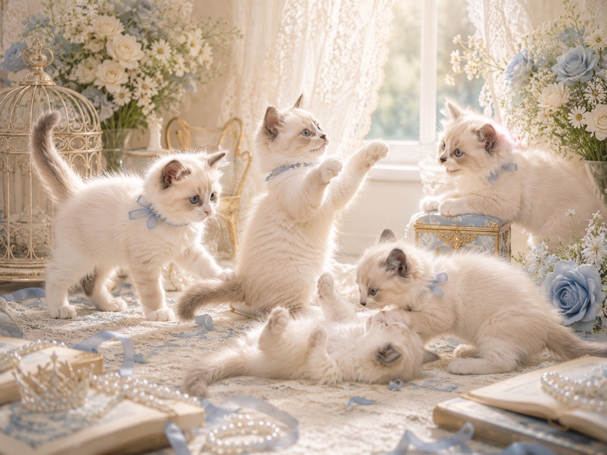
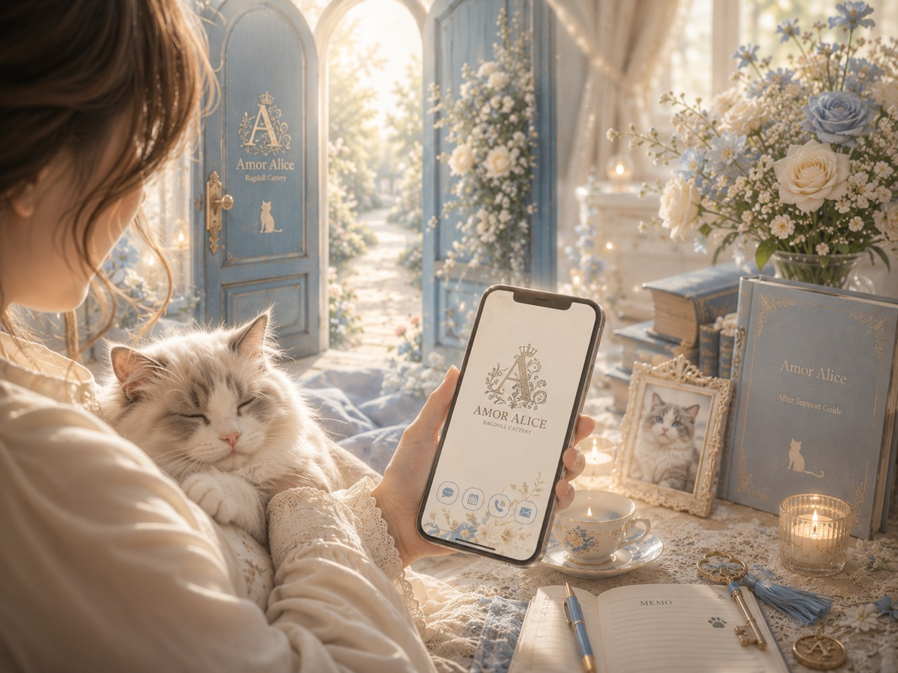
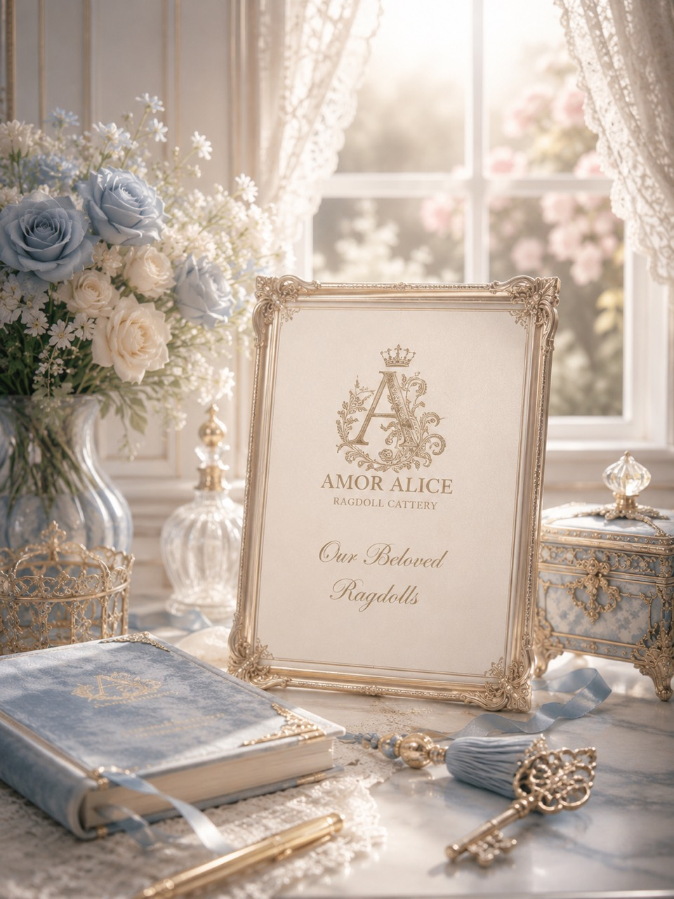
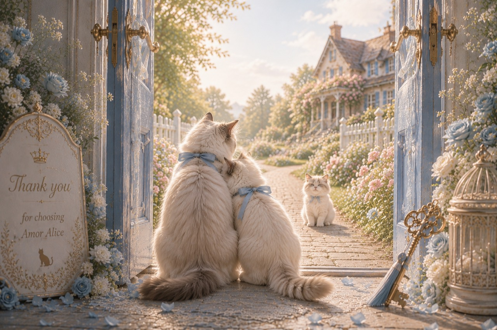
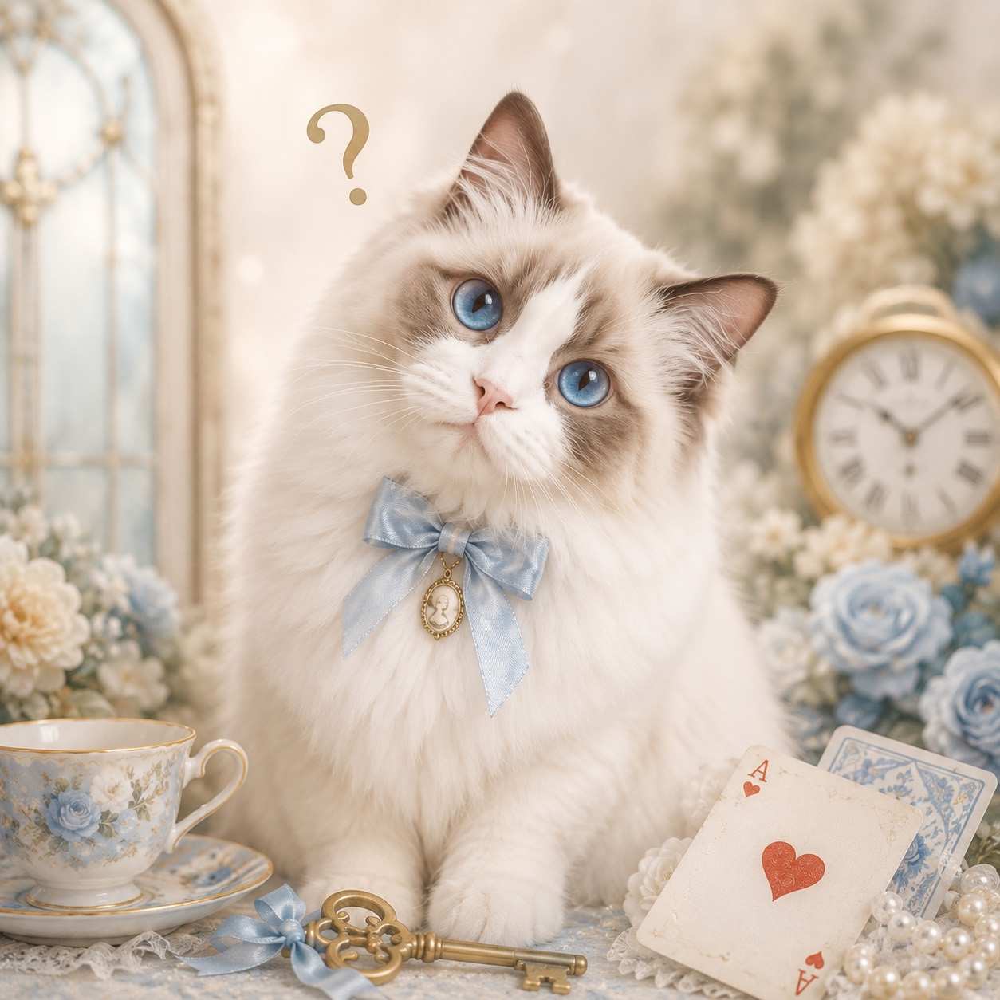

HCMクリア
HCM〈肥大型心筋症〉に関する遺伝子検査を確認しています。
Ragdoll Specialty Home Cattery
千葉県でラグドールを家族に迎えたいご家族へ。子猫との出会いを、 見学前の相談からお迎え後までていねいにつなぐ予約制ホームキャッテリーです。
Philosophy
Amor Aliceが大切にしているのは、青い瞳や毛色の美しさだけではありません。 子猫の体調、性格、生活リズム、ご家族との相性まで見ながら、焦らず、無理なく、 その子らしい毎日へつながる出会いを育てます。
「かわいいから決める」ではなく、「この子と暮らす未来が見える」と思えるまで。 見学前の相談からお迎え後まで、家族として迎える時間をていねいに支えます。

Chiba Ragdoll Cattery
Amor Aliceは、ラグドールの子猫を家族として迎えたい方へ、募集状況の確認、見学相談、 お迎え準備、お迎え後の不安まで一つずつ確認できるキャッテリーです。
「ラグドールの性格を知りたい」「親猫の雰囲気も見たい」「初めてで準備が不安」 という段階からでも、千葉県で落ち着いて相談できる入口としてご利用ください。
News
子猫たちの成長記録や、募集状況、ブログの更新など、Amor Aliceからの新しいご案内をまとめています。大切なお知らせから日々の小さな記録まで、新しいものから順にご覧いただけます。
安心できる理由
遺伝子検査は、親猫から子猫へ受け継がれる可能性のある病気のリスクを、事前に確認するための大切な検査です。見た目だけでは分からない健康面にも目を向けることで、ご家族に安心してお迎えいただけるよう準備を整えています。Amor Aliceでは、親猫たちの遺伝子検査に加え、FIV・FeLVのウイルス検査も確認しています。
HCM〈肥大型心筋症〉に関する遺伝子検査を確認しています。
PKD〈多発性嚢胞腎〉、PK欠損症に関する検査を確認しています。
FIV〈猫エイズ〉、FeLV〈猫白血病〉のウイルス検査を確認しています。
最愛の家族を、安心して迎えていただくこと。そして、猫ちゃんの「実家」として、 いつでも頼っていただける存在であること。それが、AmorAliceが考えるブリーダーとしての役割です。
優れた血統や徹底した健康管理は、ブリーダーとして当然の責任。 それだけで終わらせず、我が家から巣立った猫ちゃんと、そのご家族様が、 末永く幸せに暮らしていけることを何より大切にしています。

Kitten Information
素敵なご縁を待っている、自慢の子たちを紹介しています。 写真だけでは伝わりきらない表情や性格、日々の様子も、できるだけ丁寧に残していきます。
気になる子がいる場合はもちろん、まだ具体的に決まっていない段階でも、 出産予約や今後の予定についてご相談いただけます。

Journey & Support Book
見学前の確認から、ご予約、お迎え準備、初日の過ごし方、お迎え後のサポートまで。 大切なご縁を安心して進めていただけるように、Amor Aliceがひとつずつ丁寧にご案内します。
AMOR ALICE SUPPORT BOOKお迎えまでの流れを見るInformation
猫舎の日常、親猫たちのこと、子猫たちの成長、そしてお迎え前によくあるご質問まで。Amor Aliceをゆっくり知っていただき、大切なご縁を安心して考えていただくためのページです。
 Daily
Daily子猫たちの成長、親猫たちの表情、そして猫舎で大切にしている日々のお世話を、写真と文章で少しずつ綴っていきます。愛らしく、あたたかく、命と向き合う毎日の記録です。
日常をのぞく
Parents子猫たちの可愛らしさの奥には、親猫たちから受け継がれる性格や雰囲気があります。Amor Aliceで大切に暮らす父猫・母猫の表情や魅力を、写真とともにご紹介します。
親猫たちを見る
Graduates素敵なご縁に結ばれた自慢の子達を紹介します。里親様から届いたお写真や、お家での暮らしの様子をご覧いただけます。
巣立った子を見る
Q&A見学前のこと、出産予約のこと、お迎えまでの流れや、初日の過ごし方。はじめての方が迷いやすい内容を、安心して準備を進められるようにわかりやすくまとめています。
質問を見てみる